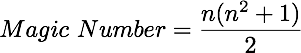
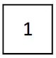
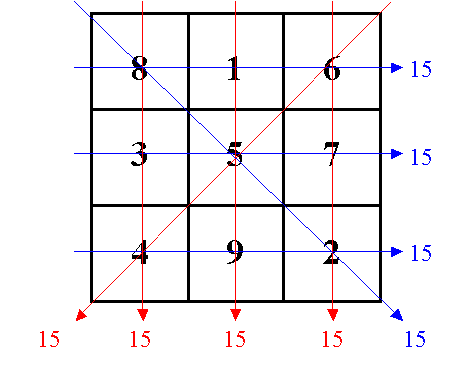
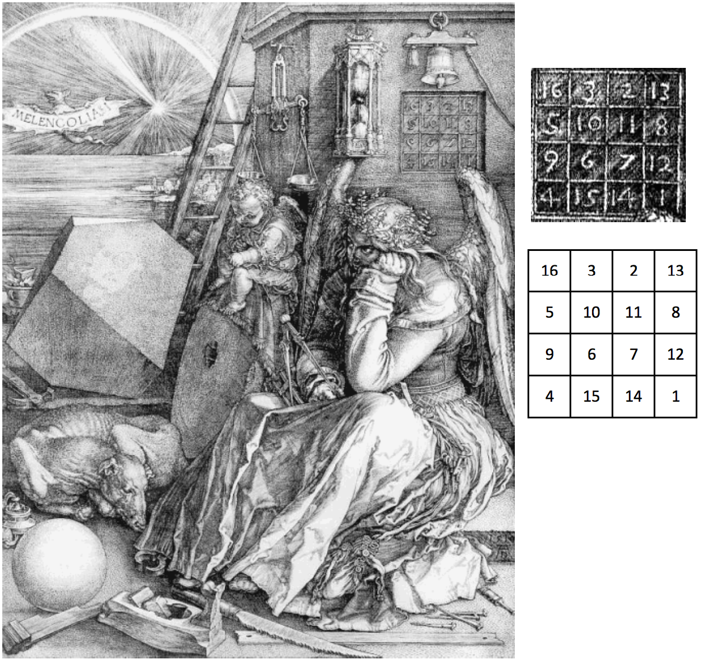

HW 17 – Magic Squares
Background
A Magic Square is an n × n matrix containing the numbers from 1 to n2, each number occurring exactly once. The sum of each row, each column, and both diagonals is the same, and is equal to the Magic Number, which is defined as

The simplest magic square is the 1 × 1 magic square whose only entry is the number 1.

The next simplest square is a 3 × 3 square.

The earliest known magic square is Chinese, recorded around 2800 B.C. A Chinese book passes on the story called Lo Shu (book of the River Lo) which tells how a magic square on the back of a turtle saved the city. The square is a typical 3 × 3 magic square, except that the numbers were represented by patterns not numerals.
The best known magic square is probably the 4 × 4 square depicted in the engraving Melancholia, shown below. This woodcut was made in 1514 by Albrecht Dürer, a contemporary of Leonardo da Vinci.

Homework Assignment
For this assignment you will write functions to accomplish the tasks described below. Each function is to be stored in its own file as indicated. You may include additional functions in any of the files in order to accomplish the given task. The four tasks are:
- Determine whether or not a two-dimensional list is a magic square (saved in file
isMagic.py). - Print a magic square so that the rows and columns are properly aligned (saved in file
printSquare.py). - Construct a magic square using the Siamese method (saved in file
siamese.py).
Extra Credit
- Construct a magic square using the LUX method (saved in file
lux.py).
The isMagic Function
This function takes a two-dimensional list as a parameter. The function returns True if the
list a magic square and returns False if it is not a magic square. The function header
should be:
def isMagic(square):
This function (and any additional functions you may need) should be saved in a file called
isMagic.py. See en.wikipedia.org/wiki/Magic_square for further
discussion on magic squares.
The printSquare Function
This function takes a two-dimensional list as a parameter. It assumes the list is a magic square. The function prints the magic square using uniform column widths. The width of each column should be based on the maximum number of digits of all the numbers in the square. The function header should be:
def printSquare(sq):
Below are two two sample outputs from the printSquare function. Notice how the numbers in
the second square are printed using a wider column width.
8 1 6 17 24 1 8 15
3 5 7 23 5 7 14 16
4 9 2 4 6 13 20 22
10 12 19 21 3
11 18 25 2 9
This function (and any additional functions you may need) should be saved in a file called
printSquare.py.
The siamese Function
This function uses the Siamese method to construct an n × n magic square, where n is odd. The function takes n as a parameter and returns the magic square constructed using the Siamese method. The function header should be:
def siamese(n):
This function (and any additional functions you may need) should be saved in a file called
siamese.py. See en.wikipedia.org/wiki/Siamese_method for an
explanation of the Siamese Method.
The lux Function (Extra Credit)
This function uses the LUX method to construct a (2n+1) × (2n+1) magic square. The function takes n as a parameter and returns the magic square constructed using the LUX method. The function header should be:
def lux(n):
This function (and any additional functions you may need) should be saved in a file called
lux.py. See en.wikipedia.org/wiki/LUX_method_for_magic_squares
for an explanation of the Lux Method.
What to Turn In
You are to turn in the four files discussed above. The files must be named:isMagic.pyprintSquare.pysiamese.py
Extra Credit
lux.py
Submit your Python source code files through Blackboard